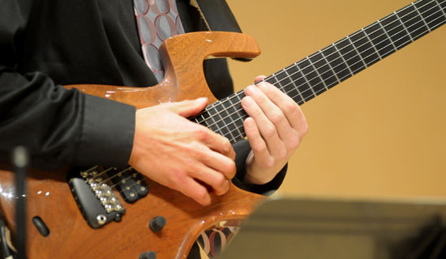

JAZZ

Whether performing in our highly acclaimed ensembles, composing and arranging, or analyzing the vast repertoire, our students receive world-class training in all things jazz from more than a dozen outstanding faculty musicians.
Jazz majors learn to compose and arrange effectively in the genre, develop an in-depth understanding of the musical and cultural history of jazz and succeed as active and creative participants in their musical communities, including serving as advocates for the art form.
With two big bands and a variety of small combos, the Jazz Area offers multiple opportunities for students to display their skills, from improvisation and collaborative performance to honoring stylistic practices unique to this creative genre.
Salt Lake City is a musical community that actively supports live jazz, with opportunities to hear internationally renowned artists in and outside of the university at concerts and clinics, as well as events like JazzSLC at the Capitol Theatre and the Salt Lake City Jazz Festival.
The Jazz Area supports regular guest artist performances, master classes and clinics, as well as faculty recitals and unique collaborations with regional jazz ensembles and organizations.
Our dedicated and talented students frequently participate and excel in competitions and perform as ensembles at major festivals.
In 2010, the U of U Jazz Ensemble was honored to be the invited American guest at the 2010 World Expo Music Festival in Shanghai, China.